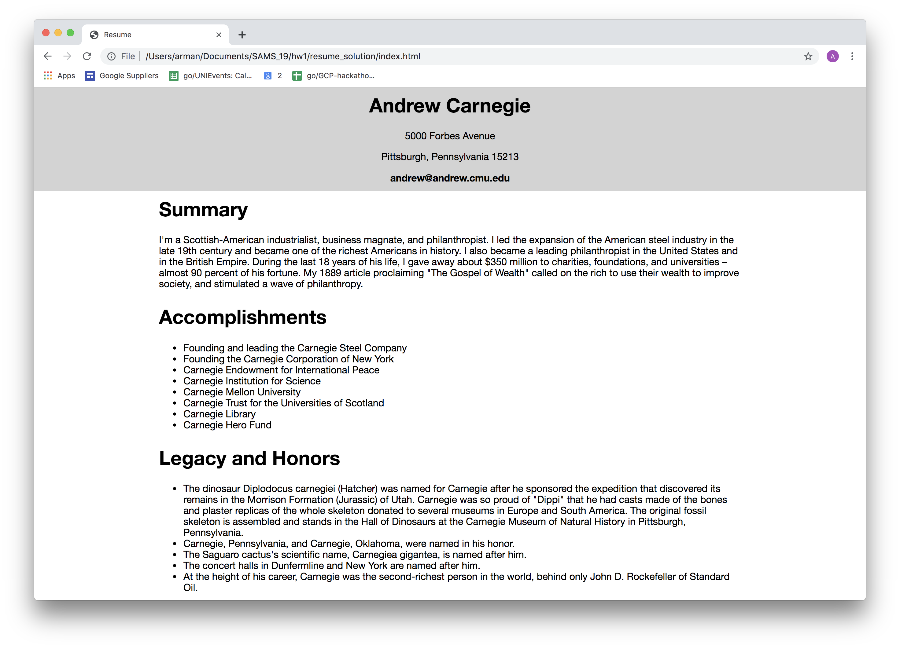
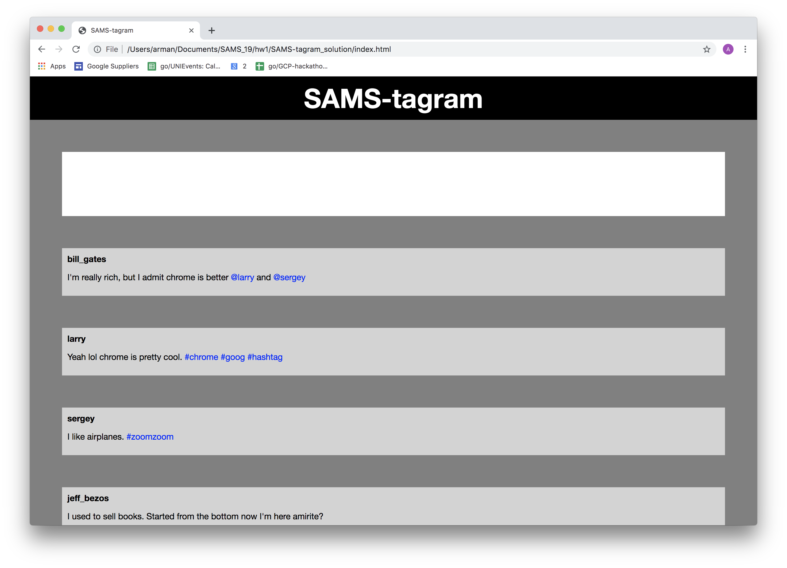

Junior Programming Homework 1
Due Monday, July 7th at 10pm
The Goal of this assignment is to practice HTML and CSS.
You're given two images, one is of a resume, the other is of a
fake social media website called SAMS-tagram. Your goal is to write the necessary HTML and CSS to replicate these images.
To Begin
- Download this folder
- Unzip the folder
- Open the folder in brackets
- Code!
To Submit
Each problem will be worth 50 of the total 100 total points for this assignment. You'll be graded on accuracy, or how similar your submission is to the image.
To submit, please follow these steps:
- Compress (or zip) the hw1_starter folder
- Submit the hw1_starter.zip file to this form.
Resume

All of the raw text for the resume is here for you to copy/paste:
Andrew Carnegie
5000 Forbes Avenue
Pittsburgh, Pennsylvania 15213
andrew@andrew.cmu.edu
Summary
I'm a Scottish-American industrialist, business magnate, and philanthropist. I led the expansion of the American steel industry in the late 19th century and became one of the richest Americans in history. I also became a leading philanthropist in the United States and in the British Empire. During the last 18 years of his life, I gave away about $350 million to charities, foundations, and universities – almost 90 percent of his fortune. My 1889 article proclaiming "The Gospel of Wealth" called on the rich to use their wealth to improve society, and stimulated a wave of philanthropy.
Accomplishments
Founding and leading the Carnegie Steel Company
Founding the Carnegie Corporation of New York
Carnegie Endowment for International Peace
Carnegie Institution for Science
Carnegie Mellon University
Carnegie Trust for the Universities of Scotland
Carnegie Library
Carnegie Hero Fund
Legacy and Honors
The dinosaur Diplodocus carnegiei (Hatcher) was named for Carnegie after he sponsored the expedition that discovered its remains in the Morrison Formation (Jurassic) of Utah. Carnegie was so proud of "Dippi" that he had casts made of the bones and plaster replicas of the whole skeleton donated to several museums in Europe and South America. The original fossil skeleton is assembled and stands in the Hall of Dinosaurs at the Carnegie Museum of Natural History in Pittsburgh, Pennsylvania.
Carnegie, Pennsylvania, and Carnegie, Oklahoma, were named in his honor.
The Saguaro cactus's scientific name, Carnegiea gigantea, is named after him.
The concert halls in Dunfermline and New York are named after him.
At the height of his career, Carnegie was the second-richest person in the world, behind only John D. Rockefeller of Standard Oil.
SAMStagram

Extra Credit (optional)
For extra credit, choose any existing website or app and recreate its interface with HTML and CSS!
You'll be given points based on the following two criteria:
- How complex the original site is.
- How visually similar it is to the original website.
To submit, please follow these steps:
- Compress (or zip) the folder for your webpage
- Submit the zipped file to this form.
Here are some other notes:
- If you choose to do this extra credit assignment, please email.
- Each student can get a max of 20 points for extra credit on this assignment.
- This is to be done solo.
- In class, I showed you how to use the inspector tool to see the HTML/CSS code for any website. You may not use the inspector tool, or any other such tool, to view the HTML/CSS code for the webpage you choose to recreate -- that would be cheating!